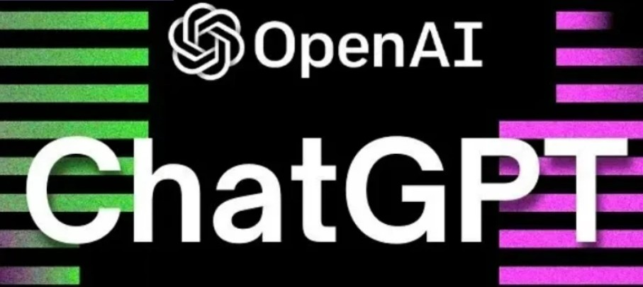

Rather than just studying theory, my approach to Machine Learning is strictly practical. I specialize in applying Computer Vision models to solve complex real-world problems. For instance, in my commercial projects, I have successfully integrated and fine-tuned YOLO (You Only Look Once) models for medical image analysis. By teaching the neural network to detect specific patterns in raw visual data (like anomalies in dental X-rays), I create systems that significantly automate and enhance human decision-making.
I have a strong focus on Natural Language Processing and modern AI assistants. I actively build intelligent bots using Retrieval-Augmented Generation (RAG) and integrate advanced models like GPT from OpenAI. This means I don't just rely on standard responses; instead, I architect systems where the LLM securely queries local databases first. This allows the neural network to generate highly personalized, context-aware content based entirely on the user's specific data.

Beyond writing the code, I deeply understand the commercial value of Artificial Intelligence. I continuously research practical scenarios for using AI to automate routine processes, analyze data, and drive financial efficiency in business. My goal is to bridge the gap between complex neural network architectures and tangible business results, delivering software that saves time and optimizes workflows.